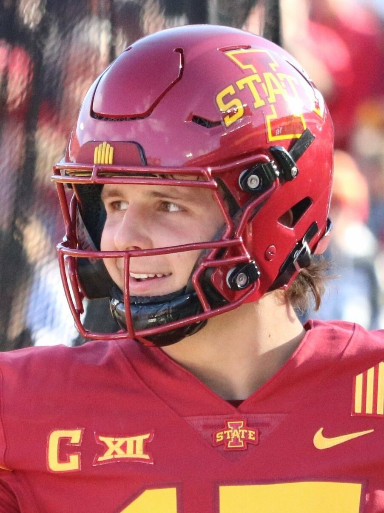
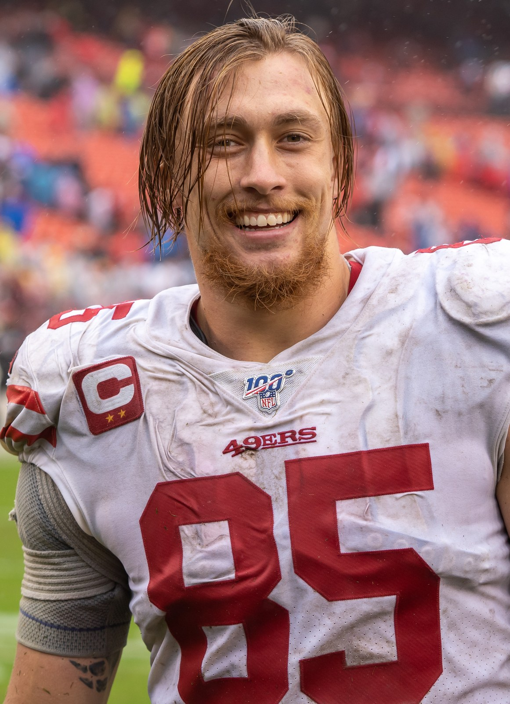

49ers 36, Cardinals 30, and Niner Fans Have Every Reason to Be Excited
Brock Purdy threw four touchdown passes, George Kittle took one away from him with a holding flag and then caught the one that put it away. Arizona made it way too close. We're 3 and 0 anyway.

I was already celebrating. That's the honest truth. It's 29 to 27, under three minutes left, Arizona has crawled all the way back from 23 to 6, and Brock Purdy tucks it and just goes. Nobody's in front of him. I'm off the couch yelling his name at the TV like he can hear me from Santa Clara, and he's in the end zone, and I threw the remote so hard it bounced off the cushion and hit the dog.
Then the flag.
Holding. Number 85. George Kittle, a man I would personally help move apartments. The whole run comes back, and I'm standing in the middle of my living room with both hands on my head like somebody told me my car got towed.
And a few plays later Purdy rolls to his right, buys himself a second, and throws a 20 yard touchdown to... George Kittle. Of course. 36 to 27 with 1:31 left. I laughed out loud, by myself, at a football game. My neighbor probably thinks I'm unwell and honestly he's not wrong.
That's this team in one drive. They'll take one away from you and then hand it right back with a bow on it. We're 3 and 0.
| Team | 1 | 2 | 3 | 4 | Final |
|---|---|---|---|---|---|
| Arizona | 0 | 6 | 7 | 17 | 30 |
| San Francisco | 7 | 10 | 6 | 13 | 36 |
Four touchdowns, and it should've been five
Let's talk about Brock, because I'm tired of defending this guy to people who should know better. Fifteen of 27 for 297 yards, four touchdowns, zero picks. That's 11 yards every time he threw it. He didn't complete a ton of passes and he didn't need to, because the ones he completed actually went somewhere.
The first one was the most fun I've had watching this team in a long time. First quarter, he hits Mike Evans short, Evans pitches it to Deebo Samuel on a hook and lateral, and Deebo's gone. Eighty yards. I rewound it three times. I don't know how long Shanahan's had that one in his back pocket, but I hope there's a whole drawer of them.
Then Evans again early in the second quarter, 23 yards, and it's 14 to 0 and I'm already texting my brother that this one's over. Never do that. I know you never do that. I did it anyway.

And then the two to Kittle in the fourth. A 10 yarder when we needed it, right after Arizona had cut it to 23 to 20, and then the 20 yarder that put it away. Six catches, 82 yards, two scores. I'm not counting the hold against him. The man gave it right back a few plays later, and that's all I ask of anybody.

Okay. The part where I sweated through my shirt
We were up 23 to 6 in the third quarter. Twenty three to six! And I had to sit there and watch Jacoby Brissett, who's not a scary quarterback, throw it 52 times and nickel and dime his way back into the game. Michael Wilson caught 11 balls. Eleven. Trey McBride caught nine. Every third down looked like the same little throw over the middle and we never had an answer for it.
A muffed punt handed them a short field. Eddy Pineiro missed two extra points, which is exactly how a 17 point cushion turns into a two point game, and I'm not letting that go. You had one job, Eddy. Two, technically. He did drill a 57 yarder to end the half and I'll give him that one, but two missed PATs in a one score game gets somebody yelled at in my house.
Brissett snuck it in from the one with 2:51 left, 29 to 27, and I was pacing laps around the coffee table. Then that drive. Christian McCaffrey fought through a pile for a first down he had no business getting. Purdy's run. The flag. Kittle. You know the rest.
Arizona kicked a 49 yarder with 34 seconds left and tried the onside kick, and who comes up with it? Deebo. He started the scoring and he ended the game. I'd like that on a T shirt.
What it cost
I didn't want to write this part. Evans hurt his ribs in the first half and got carted off. Trent Williams got carted off in the second half and my heart stopped for a solid minute. He made it back to the sideline, which I'm choosing to take as good news until somebody tells me otherwise. Dre Greenlaw hurt his quad. And we came into this already missing Ricky Pearsall, De'Zhaun Stribling and Demarcus Robinson at receiver, with Nick Bosa sitting out that calf.
Fred Warner had 17 tackles. Seventeen. He's holding this defense together with tape and stubbornness right now, and I'd like to formally apologize for every time I've taken him for granted.
Why I'm excited, and why you should be too
I've spent a lot of Septembers bracing for the other shoe. This one feels different. Three games, three wins, 27 points in Melbourne, 35 against Miami, 36 today. And today they did it without half the receiver room, lost Evans before halftime and lost Trent for a stretch, and Purdy still threw four touchdowns. A team that can do that has a quarterback. That's the whole ballgame in this league.
Is the injury list scary? Yes. Did the defense bend way too much in the second half? Absolutely, and I'll be complaining about it all week. But Niner fans, we have really good reason to be excited right now. I'm not saying the word. You know the word. I'm just not saying it in September.
The whole season lives on the schedule hub. Last week's blowout is in 49ers 35, Dolphins 13, who's still standing is on the depth chart, and the Raiders, believe it or not, are 3 and 0 too.
Denver's at Levi's next Sunday at 1:25. Same seat. Same jersey. I'm not washing it, so please don't ask.
More coverage: 49ers · NFL · Bay Area Sports Blog home